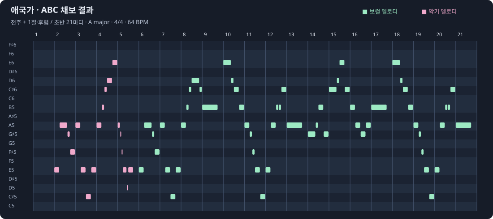

원본
2018 애국가 합창 · 1~4절
4분 21초 · 채보에 사용한 음원
애국가 합창 음원 전체에서 멜로디를 ABC 악보로 추출한 뒤, YuE2에 1~4절 가사와 함께 넣었습니다. 원본과 두 가지 장르 편곡을 차례로 들어보세요.
원본 음원 → SheetSage2 채보 → ABC 악보 → YuE2 장르 편곡
2018 애국가 합창 · 1~4절
4분 21초 · 채보에 사용한 음원
채보한 ABC를 피아노롤로 표시한 초반 21마디입니다. 초록은 보컬 멜로디, 분홍은 악기 주요 멜로디입니다. 전체 악보에는 1~4절이 들어 있습니다.

채보된 음표를 합성음으로 연주한 미리듣기입니다. 원본에서 보컬·반주를 분리한 음원이 아니며, 가사나 원래 악기의 음색은 포함하지 않습니다.
X:1 T:Aegukga - vocal excerpt M:4/4 L:1/16 Q:1/4=64 K:A e4a6g2f4|a4e4c4e4|a4b2c'2d'6c'2|b12z4|
디스토션 기타 · 더블 킥 · 남성 보컬
2분 7초 · 132 BPM
생성 시간 3분 48초 (227.8초)
Epic Korean heavy metal anthem, 132 BPM, thick distorted rhythm guitars, palm-muted chugging riffs, double kick drums, powerful snare, driving bass guitar, twin lead guitar harmonies, soaring gritty male lead singer, triumphant gang-vocal chorus, tight modern metal production, energetic dramatic arrangement. Korean language vocals, perform all four verses and every repeated chorus exactly in the supplied order, clear intelligible Korean diction, recognizable Aegukga vocal melody from the supplied score, complete song with a resolved final cadence, no spoken introduction, no additional lyrics.
Seed: 913101 · planning: melody
전체 생성 설정 JSON · 프롬프트·가사·ABC·시드댄스 비트 · 신스 베이스 · 여성 보컬
2분 13초 · 128 BPM
생성 시간 4분 7초 (247.3초)
High-energy K-pop dance anthem, 128 BPM, bright expressive female lead vocals, layered pop vocal harmonies, four-on-the-floor kick, crisp claps, pumping synth bass, sparkling synth arpeggios, euphoric dance-pop chorus, rhythmic verses, modern glossy K-pop production, catchy melodic vocal delivery and a big final chorus. Korean language vocals, perform all four verses and every repeated chorus exactly in the supplied order, clear intelligible Korean diction, recognizable Aegukga vocal melody from the supplied score, complete song with a resolved final cadence, no spoken introduction, no additional lyrics.
Seed: 913103 · planning: melody
전체 생성 설정 JSON · 프롬프트·가사·ABC·시드생성 시간은 RTX 3090 24GB · torch-eager/SDPA 환경의 YuE2 기록값입니다. 별도의 ABC 채보, MP3 변환·업로드 시간은 제외했으며 환경에 따라 달라집니다. 원본은 기존 합창 음원이므로 생성 시간이 없습니다.
[Verse 1] 동해물과 백두산이 마르고 닳도록 하느님이 보우하사 우리나라 만세 [Chorus] 무궁화 삼천리 화려강산 대한 사람 대한으로 길이 보전하세 [Verse 2] 남산 위에 저 소나무 철갑을 두른 듯 바람서리 불변함은 우리 기상일세 [Chorus] 무궁화 삼천리 화려강산 대한 사람 대한으로 길이 보전하세 [Verse 3] 가을 하늘 공활한데 높고 구름 없이 밝은 달은 우리 가슴 일편단심일세 [Chorus] 무궁화 삼천리 화려강산 대한 사람 대한으로 길이 보전하세 [Verse 4] 이 기상과 이 맘으로 충성을 다하여 괴로우나 즐거우나 나라 사랑하세 [Chorus] 무궁화 삼천리 화려강산 대한 사람 대한으로 길이 보전하세